Pasar Modal Adalah Mesin Ekonomi
BEI membuktikan diri sebagai jembatan dana: perusahaan memperoleh modal ekspansi, investor memperoleh peluang tumbuh. Layar perdagangan yang berdenyut setiap detik adalah wujud nyata dana publik yang bekerja.
Laporan perjalanan digital menuju Bursa Efek Indonesia — dari lobi IDX Tower yang berkilauan sampai lorong-lorong sejarah Museum Bank Indonesia.
Bursa Efek Indonesia (BEI) atau Indonesia Stock Exchange (IDX) adalah bursa saham nasional yang menyatukan perusahaan pencari dana dengan investor pencari peluang tumbuh.
BEI menjalankan tiga peran besar. Pertama, sebagai fasilitator pendanaan: perusahaan (emiten) menerbitkan saham dan sukuk di pasar modal untuk membiayai ekspansi. Kedua, sebagai penyedia pasar yang tertib: seluruh transaksi berjalan pada jam perdagangan resmi melalui sistem perdagangan elektronik yang diawasi ketat bersama Otoritas Jasa Keuangan (OJK). Ketiga, sebagai motor edukasi: program kunjungan industri seperti yang kami ikuti merupakan bagian dari upaya BEI menumbuhkan literasi pasar modal sejak pelajar.
Produk yang diperdagangkan sangat beragam — saham, obligasi negara dan korporasi, sukuk, ETF, hingga instrumen pendapatan tetap lain. Pergerakan seluruhnya dirangkum oleh indeks bursa, dengan IHSG (Indeks Harga Saham Gabungan) sebagai barometer utama, ditopang indeks turunan seperti LQ45 dan IDX30.

Bursa pertama Indonesia berdiri di Batavia: Vereniging voor de Effectenhandel.
Bursa Efek Jakarta dibuka kembali di era awal kemerdekaan.
Pasar modal diaktifkan kembali dan diawasi Bapepam; perdagangan mulai terlembaga.
Sistem perdagangan elektronik (JATS) menggantikan papan tulis manual.
Bursa Efek Jakarta dan Surabaya bergabung menjadi Bursa Efek Indonesia (1 Desember).
BEI diresmikan oleh Presiden Susilo Bambang Yudhoyono pada 10 Agustus.
Kunjungan kami menyeret dua sisi Jakarta yang saling melengkapi: kecanggihan IDX Tower di kawasan Sudirman, dan keanggunan Museum Bank Indonesia di kawasan Kota Tua.
Berangkat dari sekolah menggunakan bus bersama teman sekelas. Perjalanan dipenuhi pembagian tugas dokumentasi: siapa memotret, siapa merekam, siapa menyusun laporan.
Gedung kembar IDX berdiri gagah di kawasan SCBD. Rombongan masuk melalui canopi biru khas dan menikmati plaza luas dengan taman halus seperti taman Jepang.
Di lobi yang bermandikan lampu LED, kami menyaksikan layar perdagangan berdenyut: "di sinilah setiap hari, miliaran rupiah berpindah tangan." Petugas menjelaskan cara kerja bursa, perannya bagi perusahaan, dan mekanisme perdagangan elektronik.
Sertifikat saham antik era 1970-an (P.T. Semen Cibinong) terpajang di samping kisah bursa pertama 1912 di Batavia. Kami juga berhenti di dinding kutipan Warren Buffett dan mampir ke IDX Gift Shop yang penuh merchandise.
Pesan terkirim: pasar modal tidak berdiri sendiri. Kepindahan ke Jalan Pintu Besar Utara, Kota Tua, menyambungkan cerita bursa dengan sejarah bank sentral yang mengakar sejak 1828 sebagai De Javasche Bank.
Tumpukan batang emas, uang kertas era awal kemerdekaan, klise cetak uang Rp5.000, diorama-diorama sejarah, sampai pameran rempah yang dulu menggerakkan ekonomi nusantara — semuanya hadir menyusuri halaman klasik museum.
Kunjungan ditutup di depan maket gedung museum: ucapan terima kasih untuk sekolah dan guru pendamping, tepuk tangan meriah, dan dokumentasi terakhir sebelum bus membawa kami pulang.
13 foto terbaik dari kamera pribadi selama kunjungan berlangsung. Klik foto untuk memperbesar, gunakan tombol panah kiri/kanan untuk berpindah.
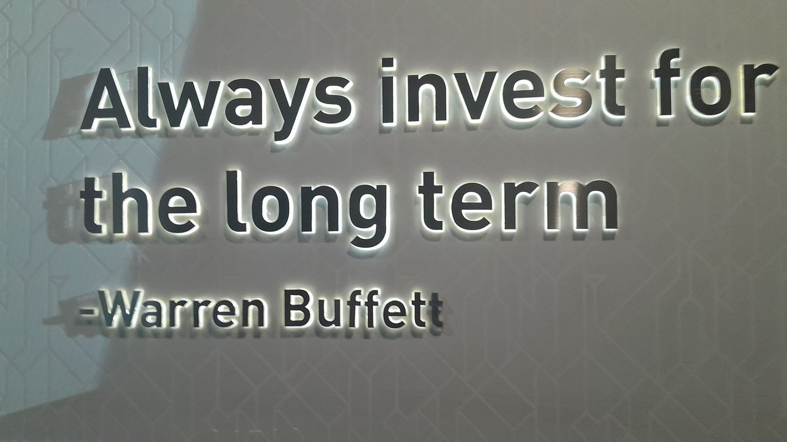
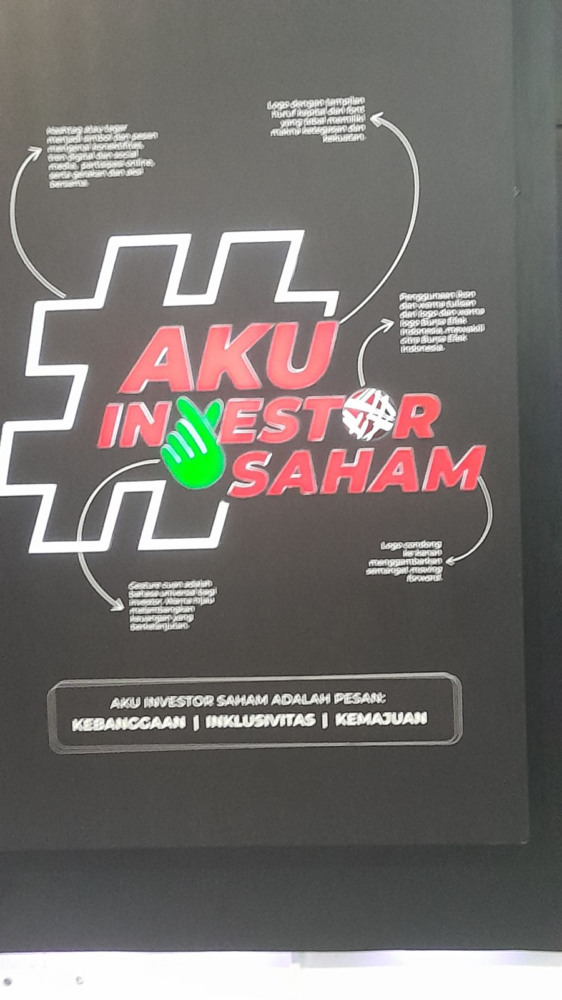
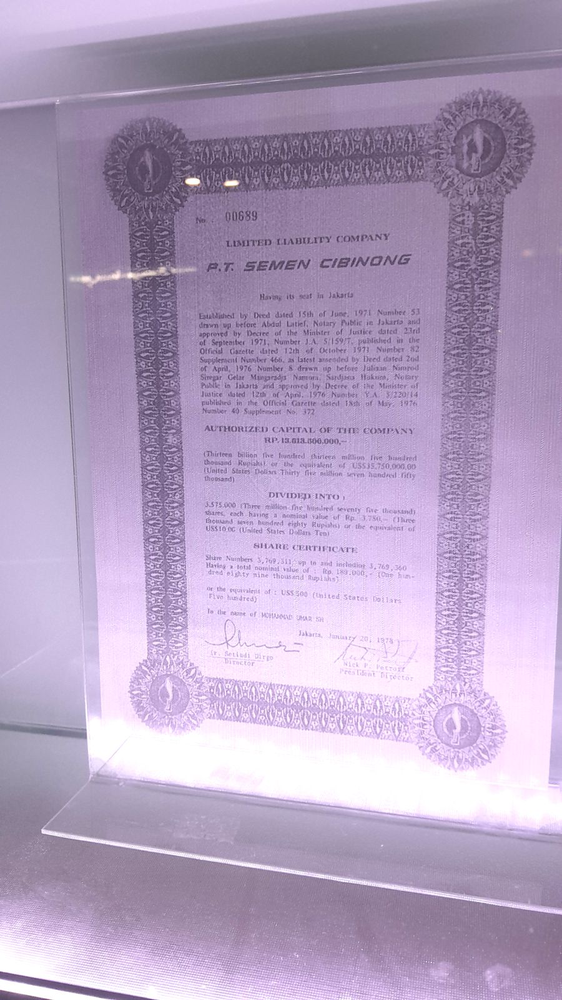
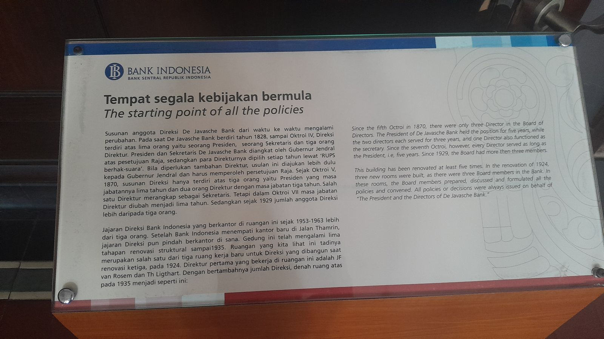
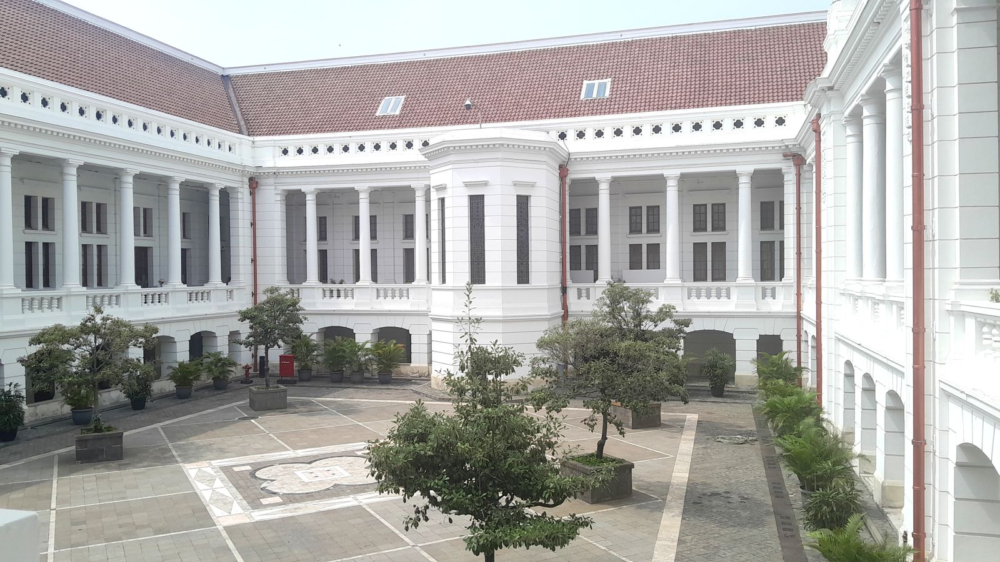
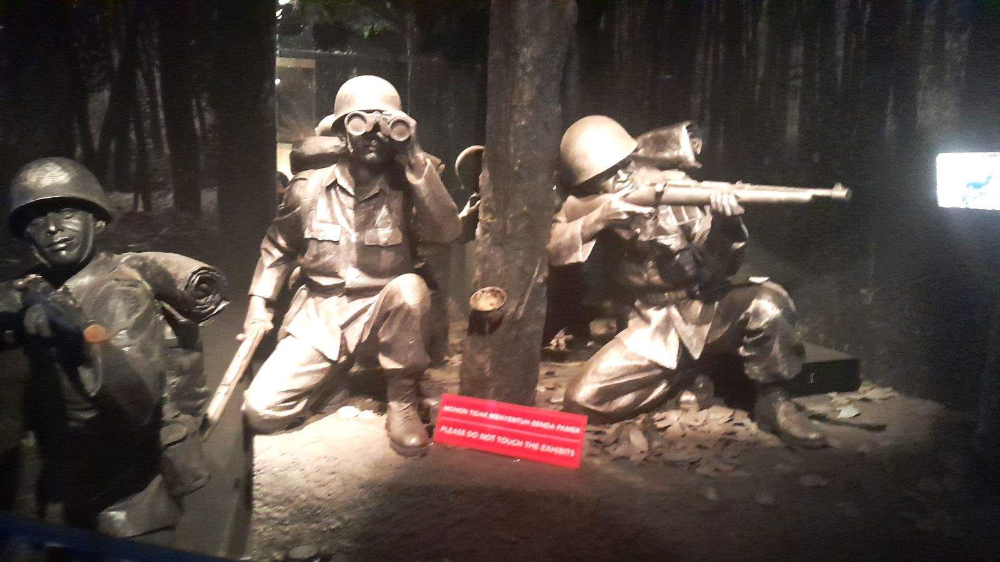
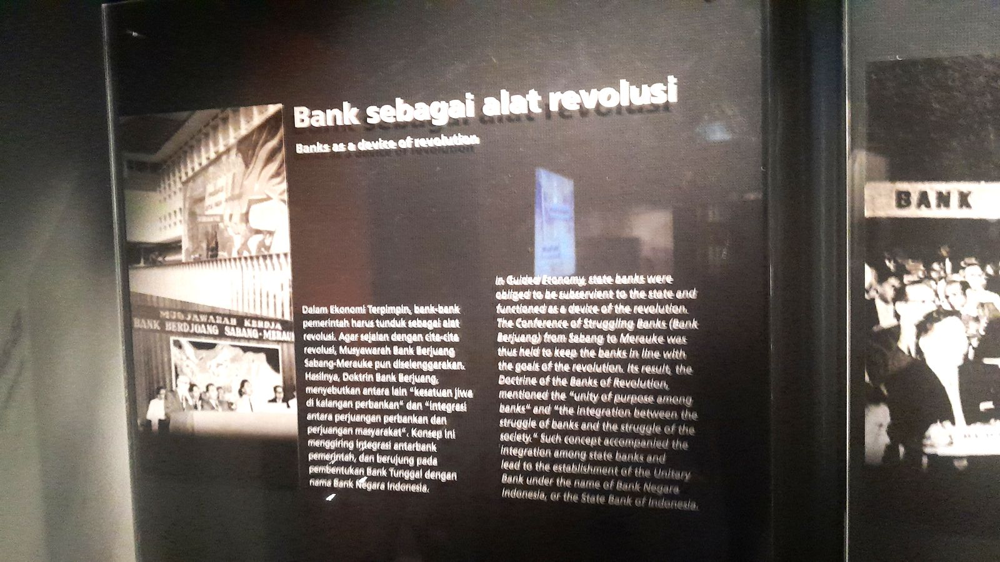
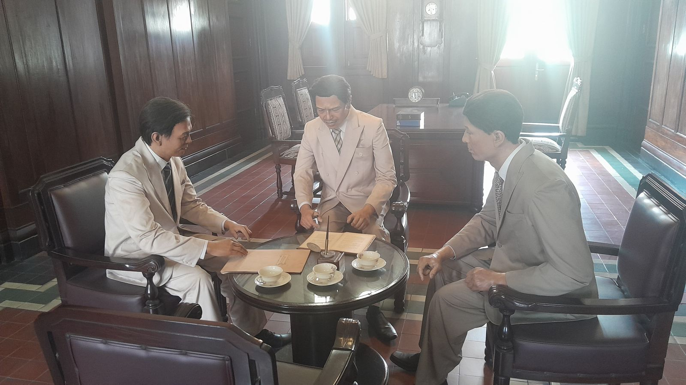
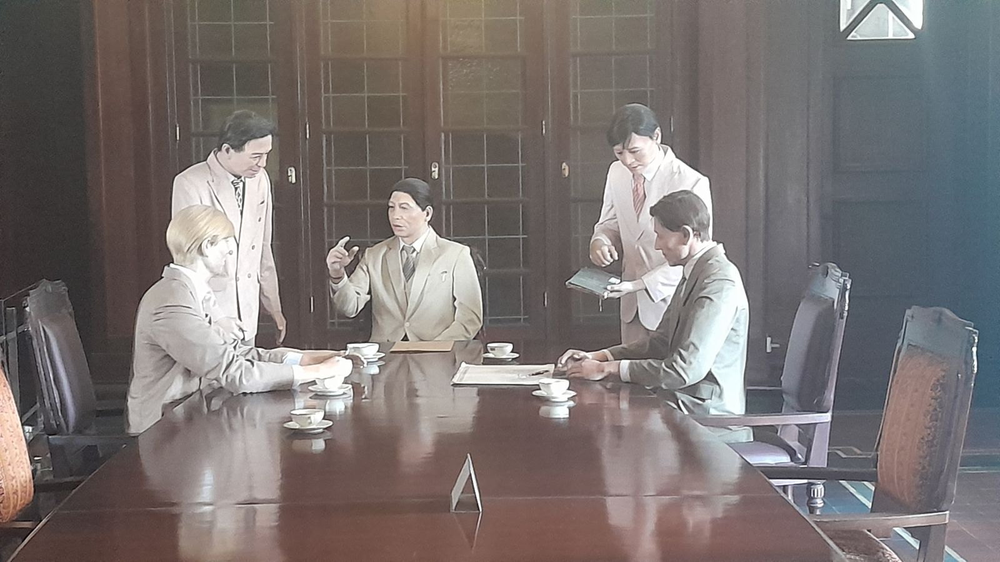
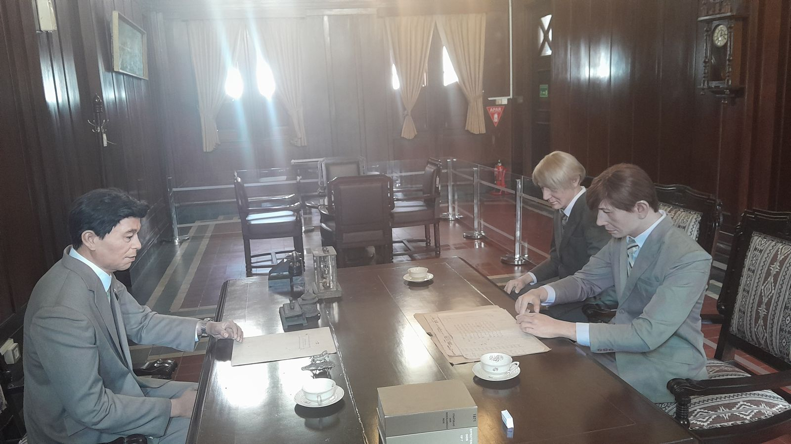
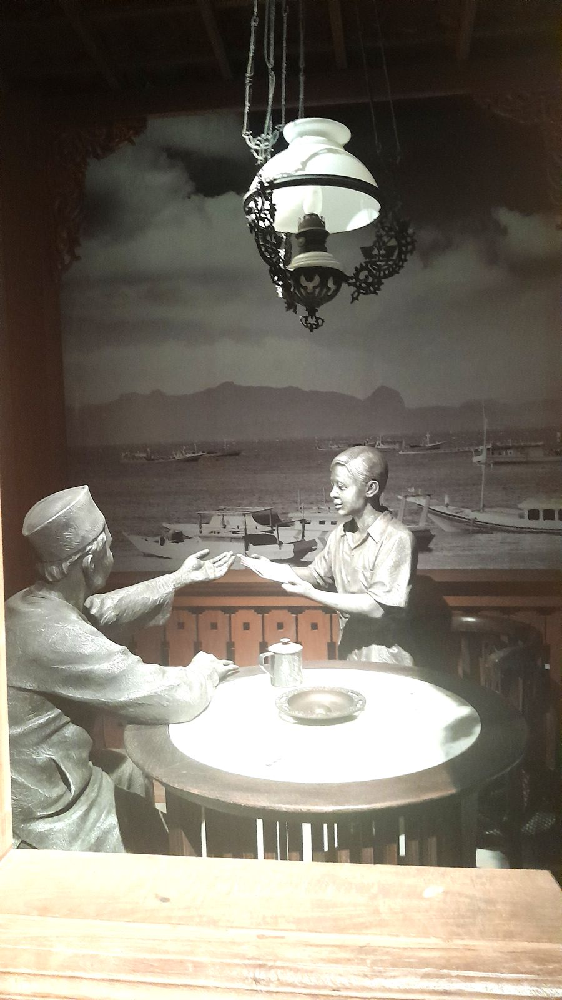
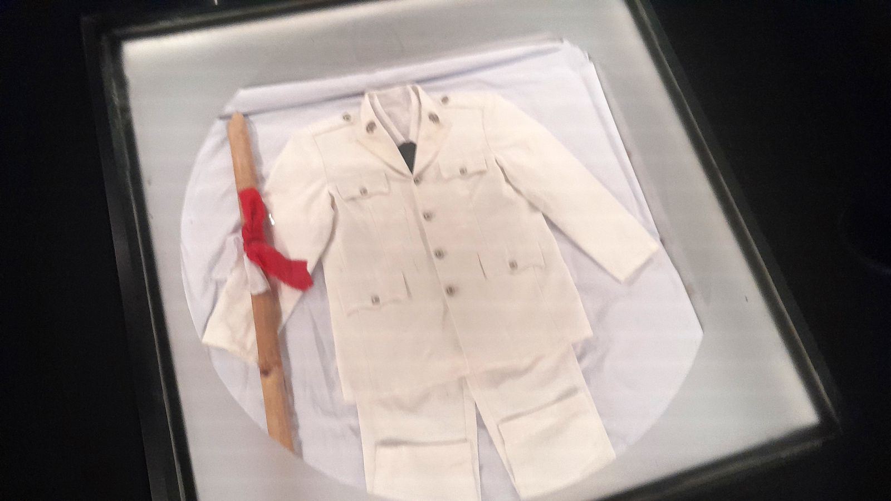
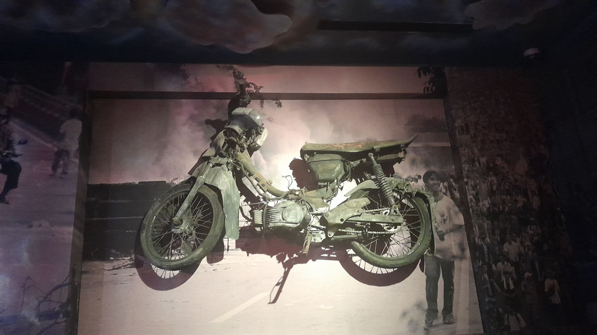
Vlog hasil dokumentasi pribadi: dari halte keberangkatan, gemerlap lobi IDX, sampai lorong-lorong Museum Bank Indonesia. Tekan putar dan nikmati perjalanan tiga menit.
Lebih dari sekadar jalan-jalan, kunjungan ini menanamkan pemahaman nyata tentang pasar modal dan inspirasi tentang masa depan karier kami.
BEI membuktikan diri sebagai jembatan dana: perusahaan memperoleh modal ekspansi, investor memperoleh peluang tumbuh. Layar perdagangan yang berdenyut setiap detik adalah wujud nyata dana publik yang bekerja.
Dari sertifikat saham 1970-an sampai sistem elektronik modern, Indonesia telah berdagang saham lebih dari satu abad. Menyaksikan sisa-sisa sejarah itu langsung membuat materi pelajaran terasa hidup.
Panel "Aku Investor Saham" dan kutipan Buffett menyampaikan pesan yang sama: mulailah memahami investasi lebih awal, disiplin, dan berpandangan jangka panjang.
Kalau ditanya bagian mana yang paling membekas, jawaban saya bukan layar bursa raksasa, melainkan diorama-diorama tenang di Museum Bank Indonesia. Di sana saya sadar bahwa sistem keuangan Indonesia tidak lahir dalam semalam — ia dibangun lapis demi lapis oleh orang-orang yang berani mengambil keputusan di masa sulit. Sebagai siswa RPL, saya melihat paralel yang jelas: sistem perdagangan elektronik yang mereka jalankan adalah karya perangkat lunak yang andal, aman, dan berjalan tanpa henti. Itu membuat saya semakin yakin bahwa kode yang saya tulis hari ini suatu saat bisa menjadi bagian dari infrastruktur yang digunakan jutaan orang. Kunjungan ini menutup satu pertanyaan dan membuka banyak yang baru — dan justru itu yang membuatnya berkesan.